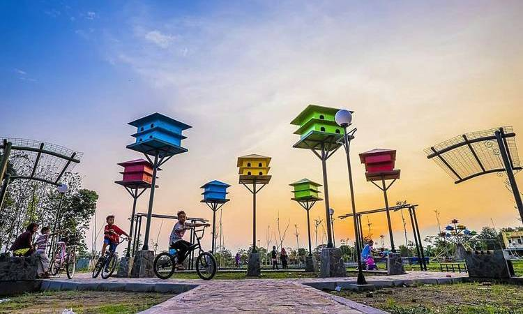
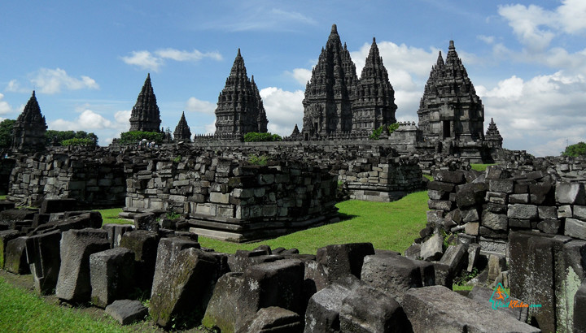

Kota Klaten

Kota Klaten adalah sebuah kawasan bekas kota administratif yang menjadi pusat pemerintahan dan ibu kota dari Kabupaten Klaten, yang berada di provinsi Jawa Tengah, Indonesia. Kota ini terdiri atas tiga kecamatan yaitu Klaten Utara, Klaten Tengah dan Klaten Selatan.
Kota Klaten terdiri atas 3 kecamatan, yang dibagi lagi atas 29 desa dan kelurahan. Jika wacana pemekaran Kota Klaten terealisasi, maka wilayah ini akan menjadi wilayah pemerintahan kota. Kecamatan di Kota Klaten yakni Klaten Utara, Klaten Tengah, dan Klaten Selatan. Kantor wali kota berada di Jalan Mawar, Klaten Tengah.
Ekonomi
Secara garis besar, Kota Klaten bukan merupakan kota industri maupun perdagangan. Sampai saat ini, aktivitas industri hanya terpusat di Jalan Diponegoro (Jalan Lingkar Selatan). Kota Klaten sempat booming dengan perdagangan tanaman hiasnya, terutama Anthurium, yang juga merebak di Kabupaten Karanganyar. Kota yang terletak di antara Yogyakarta dan Solo ini sebagai kota transit antara dua kota besar terebut. Pusat keramaian ekonomi tersebar di beberapa pasar-pasar tradisional dan pasar modern.
Kuliner & Oleh-oleh Khas
Makanan khas dari kota ini adalah ayam panggang & ayam bakar yang sudah terkenal. Banyak warung-warung makan yang menyediakan menu ini. Selain itu, sop ayam juga menjadi ikon Kota Klaten. Hampir di tiap sudut jalan dapat dijumpai penjaja sop ayam. Yang terkenal adalah sop ayam Pak Min Klaten.
Untuk Oleh-oleh khas klaten biasanya mulai dari jenis berbagai keripik diantaranya keripik belut, keripik cakar, keripik paru, kerupuk kulit sapi, dan yang agak baru berkembang keripik daun herbal dan keripik sayuran
Destinasi Wisata Klaten

Klaten merupakan kabupaten yang terletak di antara Solo dan Yogyakarta. Meskipun kecil, Klaten menyimpan destinasi wisata yang sayang untuk dilewatkan. Seperti beberapa wisata candi yang mempunyai banyak nilai sejarah dan kebudayaan, ada Candi Prambanan, Candi Sewu, dan Candi Plaosan.
- Girpasang
Tempat wisata Girpasang ini beralamat di Gritingan, Tegalmulyo, Kecamatan Kemalang. Jembatan Gantung di klaten yang baru diresmikan pada hari kamis (20/1/2022) ini membuat masyarakat penasaran dan berbondong-bondong untuk mendatangi tempat wisata alam ini. Jembatan ini merupakan jembatan penghubung antara girpasang dan desa seberang.
- Rivermoon
Terletak di Desa Karanglo, Polanharjo, Rivermoon adalah salah satu destinasi wisata yang layak dikunjungi bersama keluarga. Selain bisa menikmati hidangan yang sangat lezat di resto rivermoon, Sobat Bersinar juga bisa menikmati pemandangan yang sangat syahdu ditepi sungai.
- Bukit cinta
Jika ingin berwisata alam sekaligus memperkaya galeri foto di media sosial, silahkan berkunjung ke Bukit Cinta di Desa Gunung Gajah, Kecamatan Bayat. Destinasi wisata ini memang terkenal dengan banyaknya spot instagramable.
- Candi Plaosan
Berjarak kurang lebih 1,5 km dari arah timur Candi Prambanan, Candi Plaosan berdiri sangat kokoh dengan bangunan arsitektur yang sangat unik. Candi yang di perkirakan di bangun pada abad ke-9 ini memang tidak sepopuler Candi Prambanan, namun Candi Plaosan berhasil menarik perhatian para wisatawan domestik dan mancanegara.
Bukan hanya itu, wisata Klaten juga mempunyai destinasi alam yang menyegarkan. Anda bisa mengunjungi beberapa umbul atau tempat pemandian dengan mata air murni. Beberapa destinasi umbul di Kabupaten Klaten ini bisa menjadi rekomendasi tempat wisata untuk mengisi waktu luang bersama keluarga.
5 Fakta Menarik Tentang Kota Klaten

Berproses selama 1 minggu Tim Portal Pembelajaran Online melajah.id rilis 40 subdomain dan lengkap aplikasi elearning mandiri untuk sekolah dari tingkat SD, SMP, SMA, SMK dan 1 subdomain dan aplikasi elearning untuk MGMP, Lembaga Pelatihan yang diberi nama pasraman.melajah.id Atas dasar semangat kebersamaan dari Tim diharapkan melajah.id bisa memberikan warna baru dalam layanan E-learning terintegrasi pada sekolah di Bali. Karena portal melajah.id khusus dibuat untuk Lembaga Pendidikan Formal dan Nonformal di Bali dengan semangat belajar, bekerja, berbagi untuk Bali. Daftar sekolah yang sudah up pada tahap pertama ini adalah:
- memiliki dua candi besar
Candi Prambanan terletak di dua kabupaten yaitu Jogjakarta dan Klaten serta Candi Sewu yang tak jauh dari kompleks candi Siwa tersebut. Fakta tentang Klaten yang memiliki dua candi megah tersebut patut diacungi jempol.
- Lokasi yang dekat dengan Gunung Merapi
Bukan hanya warga Jogja yang kuwalahan jika Merapi meletus, namun juga warga Klaten. Klaten terletak di arah tenggara Gunung Merapi yang membuat sisa letusan seperti hujan debu jatuh ke kota kecil ini.
- Memiliki tiga pusat kota yang menarik
Salah satu fakta tentang Klaten yang unik adalah adanya tiga kecamatan maju di kabupaten ini yaitu Klaten Utara, Klaten Tengah dan Klaten Selatan. Bahkan muncul sebuah wacana untuk membentuk kota sendiri yang terdiri dari tiga kecamatan tersebut.
- Klaten pernah menjadi kota administratif
Klaten pernah menjadi sebuah kota administratif sebelum akhirnya pemerintah menghapuskan kota administratif pada tahun 1999. UU tersebut membuat kota Klaten yang maju bergabung kembali dengan kabupaten Klaten.
- Memiliki empat kode area
Berbeda dengan kota lain yang hanya memiliki satu kode area, Klaten memiliki empat kode area yang berbeda.
Klaten utara memiliki kode 0276 karena berbatasan dengan Boyolali, Klaten bagian barat dan selatan memiliki kode area 0274 sedangkan bagian timur yang berbatasan dengan Surakarta memiliki kode 0271. Sedangkan kode resmi kabupaten Klaten adalah 0272.